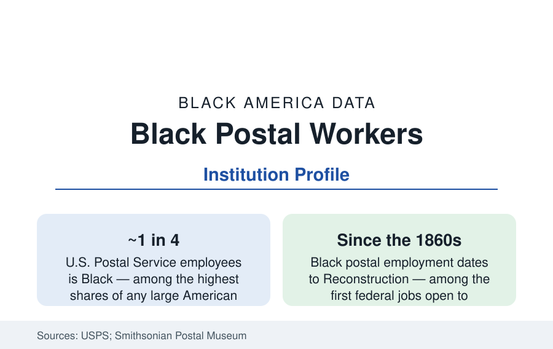

Black Employment
Black Postal Workers: The Mail's Middle-Class Machine
About a quarter of the U.S. Postal Service workforce is Black — the institution that built more Black middle-class households than any single employer in America.

Roughly a quarter of the United States Postal Service's workforce — in the range of 150,000 employees of its 600,000-plus total — is Black, a share roughly double Black America's share of the overall workforce and the highest of any comparably large American institution. For a century and a half, the post office has been the Black middle class's single most reliable manufacturer: union wages, a pension, no degree required, promotion by examination and seniority. This article reports the postal data.
The institution's demographic data are unusually public: the Postal Service publishes its workforce composition, and its Black share — roughly double the federal government's overall and triple the private sector's large-employer norm — has been a stable feature of those reports for decades, across administrations and restructuring eras alike.
The Longest Federal Thread
Black postal employment begins with the federal service itself: the first Black postal clerks and carriers date to the Reconstruction era, when the post office (then the largest federal employer by far) opened through political appointment and then, decisively, through the civil service examination system of the late nineteenth century — the merit exam being, in the data of the era, the one gate that could not see race, which is why Black Washington's and every big city's postal families date their middle-class founding to a grandfather's exam score. The twentieth century's institutional data compound: the postal unions (the National Alliance of Postal Employees, founded 1913 as the Black postal workers' own union when the federation's locals excluded them; later the integrated APWU and Mail Handlers) built the wage-and-benefit structure, the veterans' preference multiplied the Black share after both world wars (the military-to-mail pipeline is the veterans profile's oldest channel), and the Postal Reorganization of 1970 converted the system to the modern USPS with collective bargaining intact.
The Economics: What a Route Paid
The wage data explain the institution's demographic gravity. Career postal wages run at and above the national median for non-degree work — letter carriers and clerks earning, with seniority and overtime, incomes in the range of solid middle-class households in most metros — with the full federal benefit stack (pension under FERS plus the Thrift Savings Plan, FEHB health coverage, the retiree health benefit) adding the retirement security whose absence the wealth profile measures elsewhere. The household consequence is in the neighborhood data of every city profile: the 'postal family' is a stock figure of Black middle-class geography — the homeowner subdivisions of the postwar decades were substantially financed on postal and federal pay — and the occupation's intergenerational transmission (children of postal workers' education and income distributions in the mobility studies) is among the best-documented mobility channels in the literature. The two-tier workforce reforms (the non-career assistant grades created in the 2010s contracts, at lower pay and thinner benefits, disproportionately young and of color in the union data) are the current era's internal file.
The Current Institution: Decline and Adaptation
The postal system's modern data are a managed contraction: mail volume peaked in the mid-2000s and fell by nearly half in the digital substitution; the package economy (the e-commerce boom, the Amazon relationship) rebuilt volume on new terms; the career workforce shrank from its ~800,000 peak era to today's levels while the Black share held — seniority's protection operating as designed, which is precisely what seniority systems are for. The political fights over the service (the 2020-era operations controversies, the Delivering for America plan's network consolidation and its facility-level workforce effects, the rural post office's civic role) all register in the Black employment data with unusual directness, because no other institution concentrates so much Black middle-class employment in a single federal balance sheet. The stamp program's iconography (the Black Heritage series, running since 1978 — the longest commemorative series in postal history) is the institution's own acknowledgment of the relationship, in miniature, forty-plus stamps long.
Reading the Postal Data
File the post office beside the teaching service and the military as the third great public escalator — and first among them in duration. A quarter of a 600,000-person workforce, hired by examination for 150 years, explains a measurable share of the Black middle class's very existence: the subdivisions, the college funds, the pensions in the retirement file. When the data ask where Black America's stability came from, the mail is one of the documented answers.
More in Black Employment
The Black Unemployment Rate: The Two-to-One Pattern
Black unemployment runs at roughly twice the White rate — 5.5 percent against 3.3 percent in annual averages — a ratio stable across five decades of federal data. How it is measured and why it persists.
Black Median Weekly Earnings: The 80-Cent Ratio
Black full-time workers earn a median of about $900 a week — roughly 80 cents for every dollar White workers earn. The BLS earnings data by group, gender, and occupation.
Black Labor Force Participation: Working at National Rates
Black labor force participation runs at roughly the national rate — and Black women participate at higher rates than White women. The BLS participation data.
Source: U.S. Postal Service workforce data; Bureau of Labor Statistics; National Postal Mail Handlers and APWU data; Smithsonian National Postal Museum research.